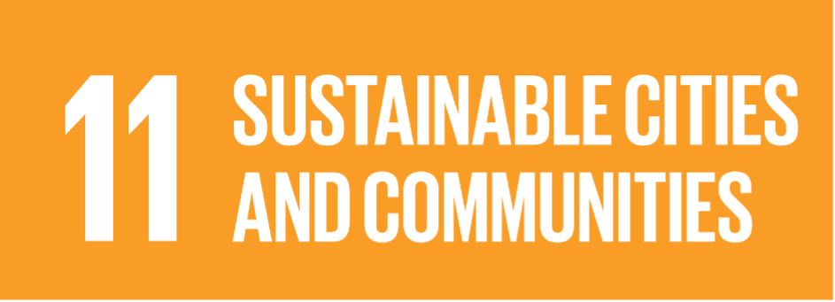

DESCRIPTION
The world is becoming increasingly urbanized. Since 2007, more than half the world’s population has been living in cities, and that share is projected to rise to 60 per cent by 2030.
Cities and metropolitan areas are powerhouses of economic growth—contributing about 60 per cent of global GDP. However, they also account for about 70 per cent of global carbon emissions and over 60 per cent of resource use.
Rapid urbanization is resulting in a growing number of slum dwellers, inadequate and overburdened infrastructure and services (such as waste collection and water and sanitation systems, roads and transport), worsening air pollution and unplanned urban sprawl.
The impact of COVID-19 will be most devastating in poor and densely populated urban areas, especially for the one billion people living in informal settlements and slums worldwide, where overcrowding also makes it difficult to follow recommended measures such as social distancing and self-isolation.
The UN food agency, FAO, warned that hunger and fatalities could rise significantly in urban areas, without measures to ensure that poor and vulnerable residents have access to food.
Facts and figures
Half of humanity – 3.5 billion people – lives in cities today and 5 billion people are projected to live in cities by 2030.
95 per cent of urban expansion in the next decades will take place in developing world
828 million people live in slums today and most them are found in Eastern and South-Eastern Asia.
Rapid urbanization is exerting pressure on fresh water supplies, sewage, the living environment, and public health.
Cities account for between 60 and 80 per cent of energy consumption and generate as much as 70per cent of human-induced greenhouse gas emissions
90 per cent of urban growth is forecasted to happen in Asia and Africa in the next 30 years.
By 2050 70 per cent of the world population is predicted to live in urban settlements.
Goal 11 targets
11.1 By 2030, ensure access for all to adequate, safe and affordable housing and basic services and upgrade slums
11.2 By 2030, provide access to safe, affordable, accessible and sustainable transport systems for all, improving road safety, notably by expanding public transport, with special attention to the needs of those in vulnerable situations, women, children, persons with disabilities and older persons
11.3 By 2030, enhance inclusive and sustainable urbanization and capacity for participatory, integrated and sustainable human settlement planning and management in all countries
11.4 Strengthen efforts to protect and safeguard the world’s cultural and natural heritage
11.5 By 2030, significantly reduce the number of deaths and the number of people affected and substantially decrease the direct economic losses relative to global gross domestic product caused by disasters, including water-related disasters, with a focus on protecting the poor and people in vulnerable situations
11.6 By 2030, reduce the adverse per capita environmental impact of cities, including by paying special attention to air quality and municipal and other waste management
11.7 By 2030, provide universal access to safe, inclusive and accessible, green and public spaces, in particular for women and children, older persons and persons with disabilities
11.A Support positive economic, social and environmental links between urban, peri-urban and rural areas by strengthening national and regional development planning
11.B By 2020, substantially increase the number of cities and human settlements adopting and implementing integrated policies and plans towards inclusion, resource efficiency, mitigation and adaptation to climate change, resilience to disasters, and develop and implement, in line with the Sendai Framework for Disaster Risk Reduction 2015-2030, holistic disaster risk management at all levels
11.C Support least developed countries, including through financial and technical assistance, in building sustainable and resilient buildings utilizing local materials